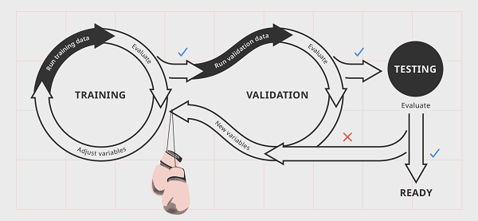

To first approach a solution to encoded bias, we must first understand how algorithms of this caliber work. There are two main ways of programming: you can either give it direct instructions, or you can feed it vast amounts of data and through complete trial and error, let the machine figure out how to organize and sort the data to get the desired outcome. Facial recognition software is designed by the second method. Programmers typically feed it vast amounts of pictures in order to “train” it to recognize faces of all types.
However, when employing the second strategy, programmers need to be very sensitive when considering what information to feed to the machine. This is because even the programmers don’t always know what is going on when the machine is learning. An infamous example of this method going wrong was Microsoft’s chatbot (named Tay) in 2016 on Twitter. Tay was designed to interact and model human behavior of typical 18-24 year olds on Twitter. However, mere hours after its release, Tay had been fed enough data by this demographic to start making it’s own racist, sexist, and anti-semitic tweets. All of the negative and biased inputs had in turn, made Tay biased.
Tay is an example of how machine learning can turn out bad. What are some preventative measures that can be taken to ensure that this doesn’t happen in other AI algorithms?
As mentioned before with the unfortunate example of Microsoft’s chatbot Tay, the learning model is crucial to preventing bias in the algorithm. There are both supervised and non-supervised learning models. In a supervised model the algorithm is fed information that has been provided entirely by stakeholders. In this model, it is crucial to ensure that the group of stakeholders has equal representation, and have all gone through the proper training to minimize unconscious bias.
The other model is unsupervised. In this model, the algorithm is entirely left alone and has to detect bias by itself. It is crucial that the algorithm can detect differences in the output data, and bias prevention techniques have been implemented so that the algorithm can learn to detect bias trends.
Machine learning and AI algorithms are constantly learning, trying to better themselves. Therefore, it is mandatory that developers and society as a whole keep an eye on the performance of the algorithms such that nothing gets out of hand. While the initial training stage may be the most crucial stage in learning, the algorithms can still change over a period of time if fed enough information. This is because the real world can always throw a curve-ball and provide an unexpected challenge for the algorithm that may require human interference or further training. It is important to never consider a “trained” algorithm as one that does not need any more supervision.

As humans continually automate certain tasks, machines and AI algorithms are being more and more relied on. These algorithms have the power to decide who gets hired, who gets housing, and who gets healthcare. These algorithms can completely ruin some people’s lives. As algorithms are being developed and released into the real world, bias is as dangerous as ever. If not properly taken into account, encoded bias in certain algorithms can put certain communities in society in harm's way. It can cause certain groups to be mistreated, and other groups to unfairly benefit from this. The preventative measures mentioned above were for programmers, but how can you, as an individual, take action to protect yourself against encoded bias?

As of now, artificial intelligence is already used for a variety of purposes including immigration, healthcare, and the justice system. Unless you are a programmer, you are quite powerless by yourself. However, there are actions you can still take to be part of a bigger group trying to make change.
Signing petitions and declarations in large groups can certainly get the attention of the government and lawmakers, and is therefore a great choice for taking action. Here is a link to a petition where you can sign a declaration. This is the film “Coded Bias”s declaration of data rights. With enough signatures, they will “ deliver the message to U.S. lawmakers in Congress.”
Furthermore, speaking out or attending conferences with individuals who may share the same experiences with biased algorithms is also a great way to share your story and find people interested in the same cause. Here is another useful link. This is the website of the famous documentary “Coded Bias”, and it has many opportunities listed to speak out against bias within artificial intelligence algorithms.